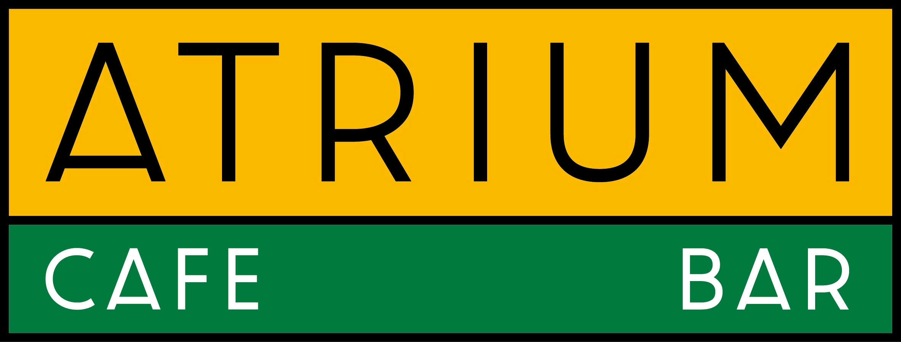
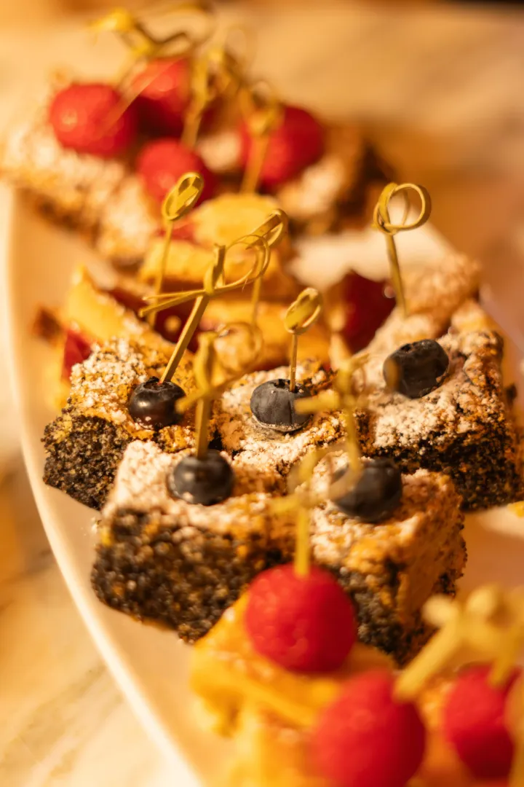
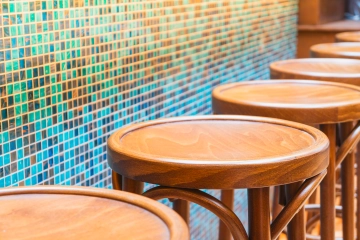
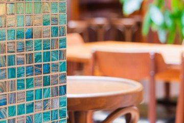
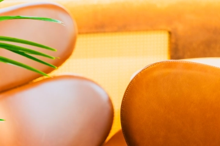

Wie komm' ich dort hin?Raus aus dem Alltag, rein in die Cafe Bar. Eine Tasse Kaffee, ein gutes Glas Wein, gute Gespräche und das Gefühl, genau richtig zu sein.
Das ATRIUM ist ein Raum für die Begegnung aller Menschen. Egal ob für einen ruhigen Kaffee am Nachmittag, ein Glas Wein nach der Arbeit oder einen langen Abend mit Freunden hier findet jeder seinen Platz.
„Die Vergangenheit steht fest, die Zukunft ist ungewiss, und der Wirklichkeit gestehen wir nur den gegenwärtigen Augenblick zu. Den Augenblick im ATRIUM.“
Mi – Fr: 16:00 – 23:00 Uhr
Sa: 16:00 – 01:00 Uhr




Für Schüler:innen und Studierende: Wir suchen laufend Aushilfen für Service und Bar, ideal neben Schule oder Studium. Du bringst gute Laune mit, wir bringen dir den Rest bei.
Events & Partys – schau vorbei.